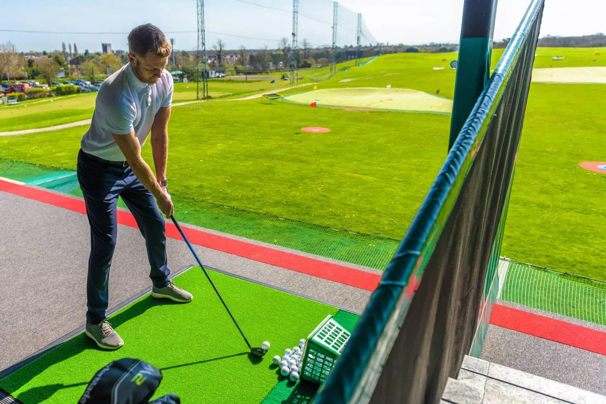
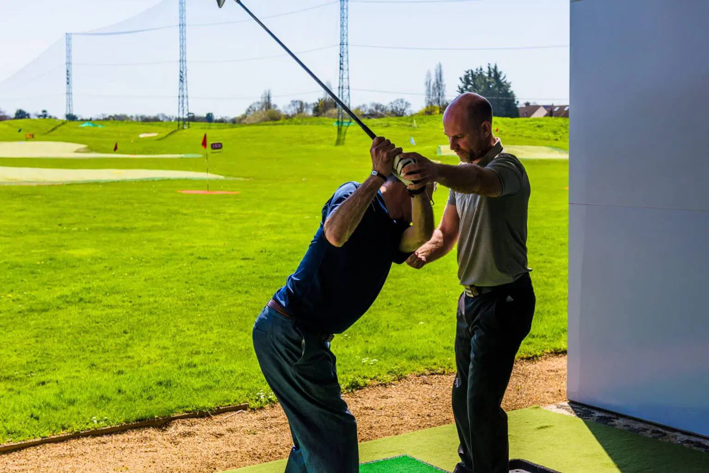

EAT. DRINK. PLAY.
WELCOME TO SIDCUP FAMILY GOLF!
Sidcup Family Golf is a Toptracer driving range and crazy golf venue in Sidcup, South East London. Passionate about technology, player development and making golf fun and accessible to everyone.
TOPTRACEP RANGE
GOLF LESSONS
ADVENTURE GOLF
COFFEE SHOP
LEAGUES
TOPTRACEP RANGE
GOLF LESSONS
ADVENTURE GOLF
COFFEE SHOP
LEAGUES
ABOUT US
Home to a 46-bay, multi-tier, floodlit driving range, powered by Toptracer Range technology. Complimented by a practice green and bunker, coffee shop and American Golf Store. There truly is something for everyone as we also boast two outdoor 18-hole dinosaur themed crazy golf courses.
Please note: we are a cashless venue. The range closes at 10pm with last balls at 9pm.

SIGN UP FOR SIDCUP NEWS AND SPECIAL OFFERS
STRAIGHT TO YOUR
INBOX
Great facilities — loads of bays in the driving range with many coloured targets to aim for and a ball tracking monitor to see if you're getting close.
Excellent couple of hours, relax and enjoy in the fun. Staff were accommodating, friendly and very helpful. Café on site for refreshments etc. Will keep children enterntained during the holidays. Worth a visit if you haven't been.
Pleasantly surprised to discover the mini golf is open until 10pm during weekdays 😊 Always enjoy visit here, cafe does some nice goodies too 👍🏽
Definitely one of the best places to hit some golf balls, the TopTracer in most of the bays is a fantastic addition for the price! I'm yet to try the Mini golf but everyone seems to be having fun over there!
Absolutely loved the experience! The staff looked after me ensured I was enjoying the range and gave me helpful tips to get the best out of my game. Digital screens to see my progress. I'll be back 😁 🏌🏽♀️
I absolutely love the adventure golf here. It seems every time I come they've added a new feature. My mum and I usually come together and it's such a laugh. The designs for the holes are creative and the two different courses makes it more fun as you can complete both and compare your scores!
Great facilities — loads of bays in the driving range with many coloured targets to aim for and a ball tracking monitor to see if you're getting close.
Excellent couple of hours, relax and enjoy in the fun. Staff were accommodating, friendly and very helpful. Café on site for refreshments etc. Will keep children enterntained during the holidays. Worth a visit if you haven't been.


WHAT ARE YOU WAITING FOR?
TOPTRACEP RANGE
GOLF LESSONS
ADVENTURE GOLF


TOPTRACEP RANGE
GOLF LESSONS
ADVENTURE GOLF
COFFEE SHOP
LEAGUES
CONTACT US